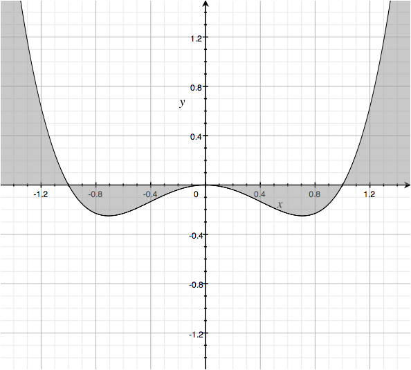
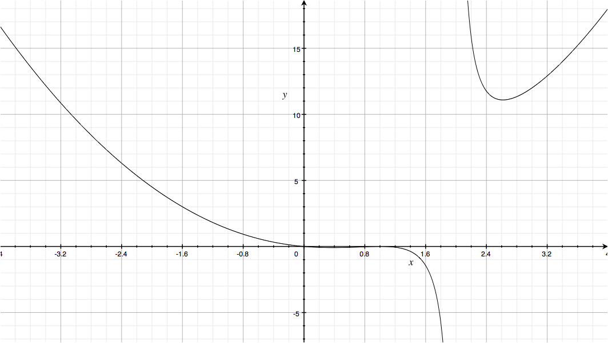

| « 3.7 | up | 4.1 » |
3.8 — Polynomial and Rational Inequalities

Suppose we have an inequality involving polynomial or rational functions. It might look like: $$ p(x) \; \left\{\lt, \leq, \gt, \geq \right\} \; q(x) $$ Our goal is to find the set of all $x$ values such that the inequality holds true. To find this set of values we use the following procedure.
Part 1
The first thing we do is move everything to one side so that we have: $$ f(x) = p(x) - q(x) \; \left\{\lt, \leq, \gt, \geq \right\} \; 0 $$ For example, we might given $$ x^2 \lt - \frac{x}{x-2} $$ and transform it into $$ x^2 + \frac{x}{x-2} \lt 0 $$Part 2
Our next step is to find a common denominator on the left and factor the top and bottom: \begin{align*} \frac{x^2(x-2) + x}{x-2} &\lt 0 \\ \frac{x(x^2 - 2x + 1)}{x-2} &\lt 0 \\ f(x) = \frac{x(x-1)^2}{x-2} &\lt 0 \end{align*} The graph of $f(x)$ is:
Our goal is to to find (in interval notation) all $x$ such that $f(x) \lt 0$.
Part 3
The function $f(x)$ can only change sign across its roots or vertical asymptotes (look at the graph). We find these corresponding $x$ values and call them partitioning points. The partitioning points for the above function are: $$ x = 0, 1, 2 $$ These points split the $x$-axis into intervals: $$ \left\{ (-\infty, 0), (0,1), (1,2), (2, \infty) \right\} $$ Since we know $f(x)$ only changes sign across partitioning points, this means the sign of $f(x)$ does not change within any particular interval created by the partitioning points.Part 4
Finally, we determine the positivity / negativity of $f(x)$ within each interval by sampling an $x$ value within each interval and evaluating $f$ at that sample point. \begin{align*} f(-1) &= 4 / 3 \\ f(1/2) &= -1 / 12 \\ f(3/2) &= -3 / 4 \\ f(3) &= 12 \\ \end{align*} So we conclude that $f(x) \lt 0$ for $x$ in $(0,1) \cup (1,2)$.
Solve $3x^2 + x \geq 2$
$(-\infty, -1] \cup [\frac{2}{3}, \infty)$
Solve $3x^2 +x \geq 2$ by using your knowledge of polynomials (finding roots, sketching the graph, etc...).
$(-\infty, -1] \cup [\frac{2}{3}, \infty)$
Solve $(2x-3)(x+2)(3-x) \gt 0$ by using your knowledge of polynomials (finding roots, sketching the graph, etc...).
$(-\infty, -2) \cup (\frac{3}{2}, 3)$
Solve $\displaystyle \frac{-x-7}{(x+2)(x-3)} \leq 0$
$[-7,2) \cup (3, \infty)$
Solve $\frac{1}{3-x} \geq 2$
$[\frac{5}{2}, 3)$